FADE IN: · FILM TALK, PART 2
Director's
cut
Better words for how a film makes you feel, a way to put the spotlight on what matters, and your favourite film in one minute.
One-word review
TASKGive each film a one-word review. You can't use these words:
Was it easy? Which films were hard to describe without those six words?
What the film is like
TASKRead the words and examples. Which ones do you already know? Which ones could you use for the films in Scene 1?
Match them up
TASKConnect each word with its meaning. Then say: which film from Scene 1 is it?
What it did to me
TASKRead the phrases and examples. Which of them has happened to you?
How did it feel?
TASKWhat would you say in each situation? Use a phrase from Take 3.
Has a film ever left you speechless or stayed with you for days? Which one, and why?
Two reviews
TASKMark and Anna saw the same film and say the same things. But they say them differently. Find five places where Anna changes the sentence. Why do you think she does it?
She first tells you what kind of thing is coming (“what I liked…”, “the reason…”), and only then gives the important part. It comes at the end of the sentence, where we listen most. That's why Anna sounds more sure about her opinion.
Cleft sentences: why bother?
TASKA cleft sentence takes one simple sentence and splits it in two, to put a spotlight on one part. Read why people use them.
I liked the music. → What I liked was the music.
It wasn't the plot that I loved, it was the actors.
Do you do something like this in your own language? How do you show the most important part when you speak?
Three ways to split it
What…
What + I + verb + is / was + the focus
What I loved was the soundtrack.
What surprised me was how funny it was.
What I didn't expect was the plot twist.
What happens is she loses her memory.
It is / It was…
It is / It was + the focus + that / who + the rest
It was the ending that made me cry.
It's the dog who steals the show.
It wasn't the story that I loved, it was the music.
The thing / The reason…
The thing / The reason / The moment / All + … + is / was
The thing that annoyed me was the voice-over.
The reason I watched it was the cast.
The moment I knew I'd love it was the first song.
All I wanted was a happy ending.
Watch out
Spotlight it
TASKSay each sentence again with the beginning in blue. Keep the same meaning.
No, it was…
TASKEvery fact here is wrong. Correct it with No, it wasn't… it was… or No, it was… that / who…
Answer with a spotlight
TASKAnswer fast. Start with the words in yellow, then add one more sentence.
What annoys you most at the cinema?
What annoys me most is…
What makes a really good villain?
What makes a good villain is…
What do you do when a film is boring?
What I usually do is…
Why do you watch some films again and again?
The reason I… is…
What's the best moment in your favourite film?
The moment that… is when…
Who is the best actor in your favourite series?
It's … who…
Your film in one minute
TASKTell me about your favourite film. Start with Without spoiling anything…, choose ONE main thing to say and finish with I'd recommend it if…
Starting
- Without spoiling anything…
- Spoiler alert!
- It's the kind of film that…
Opinion
- In my view…
- What struck me was…
- I was blown away by…
- It left me cold.
Contrast
- Having said that…
- On the one hand… on the other hand…
- Even though…
Feelings about events
- Sadly, / Unfortunately,
- Surprisingly, / Thankfully,
- Predictably,
Finishing
- In the end… / All in all…
- Looking back…
- I'd recommend it if…
Did you use…
Without spoiling anything, Groundhog Day is about a grumpy TV weatherman who wakes up on the same day again and again. What I love about it is that it's hilarious and thought-provoking at the same time. Even though it's an old film, the jokes still work. Having said that, the start is a bit slow. The thing that stayed with me for days was the question: what would I do with the same day? All in all, it's a real feel-good film, and I'd recommend it if you need a good laugh on a grey evening.
Hot takes
TASKReact first, then explain with a spotlight sentence: No way! What makes a film great is…
Trailers show far too much of the film.
Films these days are far too long.
A film is only as good as its ending.
Remakes ruin the classics.
Cheesy films are the best films.
Actors are paid far too much.
Casting director
TASKYou are the director. Choose the best actor for each role and explain: It's … who… / What makes her perfect is… / The reason I'd choose him is…
A single mother of four fighting for the custody of her children
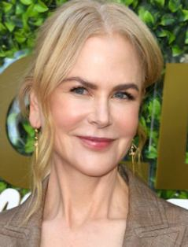
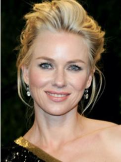
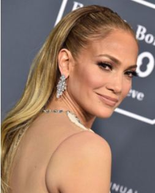
A serial killer who works unlike anyone else
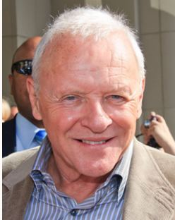
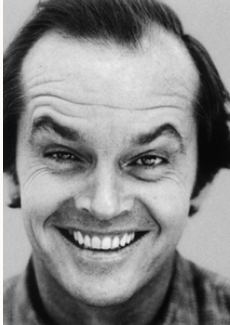
A wicked witch who takes over a peaceful kingdom
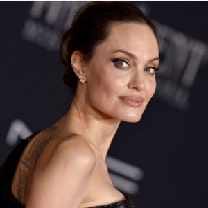
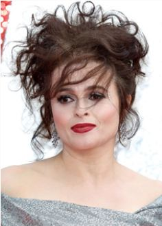
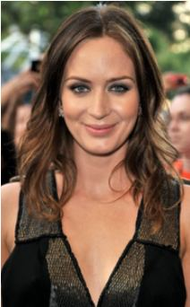
A very bright, gifted child who is bullied at school
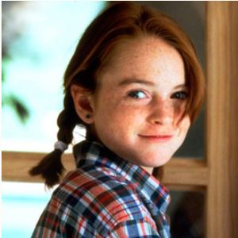
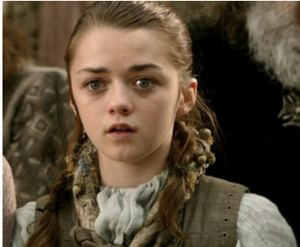
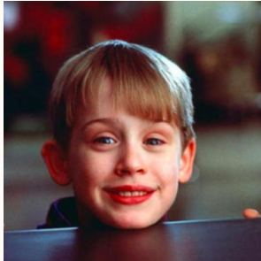
More auditions
TASKSame again: who gets the role, and why? Use a spotlight sentence.
A rich, powerful businessman with a crisis in his family
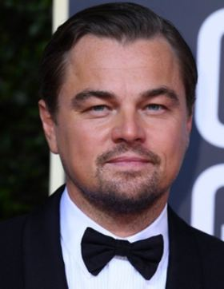
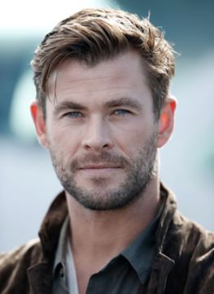
An attractive, high-maintenance girl who nobody takes seriously
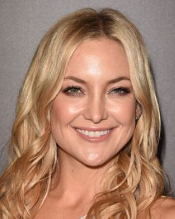
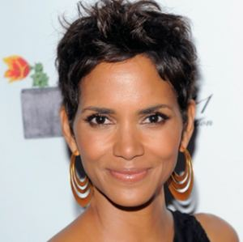
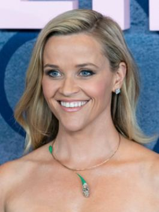
A mad scientist whose AI is going to take over the world
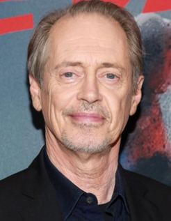
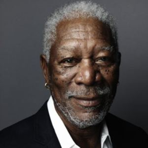
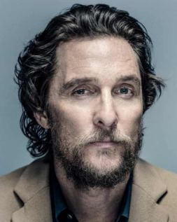
That's a wrap!
FADE OUT.